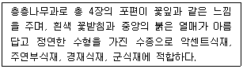
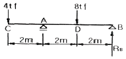
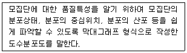
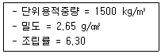
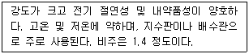
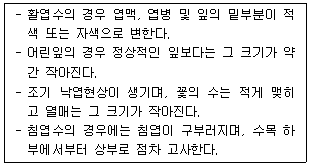

조경산업기사 (2010-09-05 기출문제)
1과목: 조경계획 및 설계
1. 다음은 조경계획 수립과정을 순서별로 나열한 것인데 올바른 것은?
- 기본전제 → 자료수집(조사) → 분석 → 종합 → 기본구상 → 대안 → 기본계획
- 기본전제 → 분석 → 자료수집(조사) → 기본구상 → 종합 → 대안 → 기본계획
- 자료수집(조사) → 종합 → 분석 → 기본구상 → 기본전제 → 대안 → 기본계획
- 자료수집(조사) → 분석 → 종합 → 기본전제 → 기본구상 → 대안 → 기본계획
(정답률: 83%)

2. 미끄럼대와 관련된 설계기준으로 틀린 것은?
- 미끄럼대의 배치 방향은 되도록 북향으로 배치한다.
- 미끄럼판의 높이는 1.2~2.2m 로 한다.
- 미끄럼판의 기울기는 30~35°로 재질을 고려하여 설계한다.
- 미끄럼판 출구에서 직립자세로 전환하기 쉽도록 착지판에서 놀이터 바닥의 답면까지 높이는 30 cm 이하로 설계한다.
(정답률: 66%)
3. 조선시대 경승지에 세워진 누각들이다. 경기도 수원에 위치하고 있는 것은?
- 방화수류정(訪花隨柳亭)
- 사미정(史美亭)
- 한벽루(寒碧樓)
- 북수구문루(北水口門樓)
(정답률: 86%)
4. 센트럴파크의 설계안인 그린스워드(Greensward)안의 특징이 아닌 것은?
- 입체적 동선체계
- 격자형 가로망
- 잔디밭이 넓고 평탄한 평지
- 교육적 효과를 위한 화단과 수목원
(정답률: 78%)
5. 에크보(G. Eckbo)는 공간구성(space organization)요소로서 8가지를 들고 있다. 이 중 기본 3요소에 속하지 않는 것은?
- 차원
- 시간
- 토지
- 에너지
(정답률: 72%)
6. 다음 “경관”에 대한 설명으로 부적합한 것은?
- 경관은 우리들을 둘러싼 세계 그 자체이다.
- 경관은 시간과 공간에서 얻어지는 하나의 연속적인 경험이다.
- 경관은 시각적으로 물리적으로 연속저기다.
- 경관은 보여지는 풍경이므로 지각되는 풍경과는 관계없다.
(정답률: 94%)
7. 비용편익분석(Cost-Benefit Analysis)과 관련이 없는 용어는?
- 소비자잉여(Consumer’s Surplus)
- 비용-편익비(B/C Ratio)
- 순현재가치(Net Present Value)
- 수입(revenue)
(정답률: 88%)
8. 창덕궁 후원과 관련 없는 것은?
- 부용정
- 향원정
- 옥류천
- 취한정
(정답률: 75%)
9. 색의 온도감에 관한 설명으로 틀린 것은?
- 유채색의 경우 중성색은 온도감이 느껴지지 않는다.
- 장파장보다 단파장 쪽의 색이 차게 느껴진다.
- 일반적으로 명도보다 색상에 의한 효과가 크다.
- 무채색의 경우 명도가 높으면 따뜻하게 느껴진다.
(정답률: 72%)
10. 설계가가 설계를 진행하면서 사전에 미리 파악할 수 없었던 상황변화가 생기면 앞 단계에 결정한 내용을 번복하거나 수정해야 할 필요가 생기기도 하는데, 이처럼 설계과정에서 앞서의 결정내용을 번복하는 환류(還流, feed-back)과정을 거쳐 설계를 진행하는 방식은?
- 암(暗)상자 접근방법 : black-box approach
- 명(明)상자 접근방법 : glass-box approach
- 자율적 제어방법 : self-organizing approach
- 창의적 접근방법 : creative approach
(정답률: 71%)
11. 미국인으로 근대 공원의 개념을 확립한 사람은?
- 란셀로트 브라운
- 윌리암 챔버
- 험프리 랩턴
- 프래드릭 로 옴스테드
(정답률: 87%)
12. 조망(眺望)의 초점을 중심축의 종점(終點)에 해당되는 부분에 두는 경우의 정원은?
- 중심원(中心園)
- 단심원(端心園)
- 편심원(偏心園)
- 원심원(圓心園)
(정답률: 63%)
13. 도시계획시설의 결정·구조 및 설치기준에 관한 규칙상의 유원지의 결정 기준이 아닌 것은?
- 유원지의 규모는 10000m2 이상으로 당해 유원지의 성격과 기능에 따라 적정하게 한다.
- 준주거지역·일반상업지역·자연녹지지역 및 계획관리지역에 한하여 설치해야 한다.
- 대규모 유원지의 경우 교통시설이 고속국도나 지역간 주간선도로에 쉽게 연결되도록 해야 한다.
- 공공목적을 위하여 필요한 최소한의 규모로 설치하여야 한다.
(정답률: 78%)
14. 명나라시대 이후 유명한 민간정원이 많이 남아있는 지역은?
- 북경
- 남겨
- 소주
- 항주
(정답률: 87%)
15. 환경영향평가에 대한 설명으로 옳은 것은?
- 주로 개발에 따른 사회적 영향에 초점을 맞춘다.
- 환경설계평가 중 사후평가라 할 수 있다.
- 환경영향평가는 영국에서 최초로 시작되었다.
- 환경영향평가법상 환경영향 평가의 세부항목으로는 6개 분야 21개 항목으로 구성되어 있다.
(정답률: 59%)
16. 제4차 국토종합계획의 기본목표는 4가지이다. 다음 중 기본목표에 해당하지 않는 것은?
- 균형국토
- 녹색국토
- 개방국토
- 환경국토
(정답률: 51%)
17. 도시공원 및 녹지 등에 관한 법률 시행규칙상의 유치거리가 1천미터 이하이며, 규모가 3만제곱미터 이상이 되는 공원은?
- 근린생활권근린공원
- 도보권근린공원
- 도시지역권근린공원
- 광역권근린공원
(정답률: 58%)
18. 다음 중 주위가 어두워질 때 가장 늦게까지 잘 보이는 계통의 색은?
- 청색계통
- 적색계통
- 황색계통
- 자색계통
(정답률: 62%)
19. 도시공원 및 녹지 등에 관한 법규상 공원조성계획시 포함되지 않는 것은?
- 개발목적 및 개발방향
- 공원조성에 따른 수입 활용계획
- 조경 및 식재 등에 대한 부문별 계획
- 공원조성에 따른 영향 및 효과
(정답률: 89%)
20. 일본의 아스카(飛鳥)시대에 궁 남쪽에 백제 사람에 의하여 만들어졌다고 하는 한 정원에 관한 설명으로 옳지 않은 것은?
- 귀화인(歸化人)인 노자공(路子工)에 의하여 만들어 졌다.
- 만든 연대는 서기 612년경이다.
- 네모난 형태의 못과 섬을 만들었다고 기록되어 있다.
- 이 기록은 일본서기(日本書紀)에서 볼 수 있다.
(정답률: 78%)
2과목: 조경식재
21. 다음 수종 중 꽃보다는 잎을 감상하는 수목은?
- 수국, 매화나무
- 이팝나무, 산벚나무
- 모란, 개나리
- 주목, 능수버들
(정답률: 90%)
22. 우리나라에서 방향(芳香) 식물원의 효과를 거둘 수 있도록 식재공간을 조성하고자 한다. 다음 중 적당하지 않은 것은?
- 방향식물은 한두 그루 정도로도 큰 효과를 기대할 수 있다.
- 식재 위치는 창가, 현관 또는 통로 주변이 효과적이다.
- 옥외의 개방된 공간에는 장미 터널식, 생울타리식으로 군식해야 효과적이다.
- 대표적인 수종은 치자나무, 태산목, 목서 등이 있다.
(정답률: 76%)
23. 근류균을 갖고 있어 절개지와 같은 척박지에 사용이 적합한 식물은?
- Elaeagnus umbellata
- Zelkova serrata
- Fraxinus rhynchophylla
- Lagerstroemia indica
(정답률: 48%)
24. 다음 임해매립지의 식재에 대한 설명 중 옳지 않은 것은?
- 식물생육에 미치는 염분의 한계농도는 수목이 0.⑤%, 잔디가 0.1% 이다.
- 해저의 펄 흙으로 매립된 곳은 도라을 깊이 파고 모래를 채워 투수성을 향상시킨다.
- 쓰레기로 매립된 곳은 가스가 발생하여 나무뿌리가 죽으므로 파이프를 박아 가스를 빼낸다.
- 바닷바람이 강한 곳은 바다 가까이 키가 큰 방풍림을 조성하고 내륙쪽에 잔디 등을 심어 휴식 시설로 이용한다.
(정답률: 62%)
25. 연평균기온 15℃ 이상의 지역에 생육이 적합한 조경 수종으로만 연결된 것은?
- 분비나무, 네군도단풍
- 마가목, 사스래나무
- 녹나무, 자작나무
- 붉가시나무, 후박나무
(정답률: 32%)
26. 일반적인 방품림으로 방풍식재를 한 경우 가장 방풍효과가 큰 곳은 바람 아래쪽의 수고의 몇 배 떨어진 곳인가? (단, 풍속의 65%정도의 감쇠효과가 있다.)
- 1~2배
- 3~5배
- 9~10배
- 10~20배
(정답률: 86%)
27. 지하수위가 높은 곳에 식재하기 가장 적합한 수종은?
- Taxodium distichum
- Pinus densiflora
- Maackia amurensis
- Juniperus chinensis
(정답률: 53%)
28. 인공지반에 자연토양으로 식재된 잔디의 생육에 필요한 최소 토심은? (단, 배수 구배는 1.5~2.0% 이다.)
- 15 cm
- 30 cm
- 50 cm
- 90 cm
(정답률: 63%)
29. 조경용 수목으로서 일반적인 조건에 맞지 않는 것은?
- 이식이 쉬워야 한다.
- 교목성이라야 한다.
- 환경 적응력이 커야 한다.
- 시장성이 있어야 한다.
(정답률: 76%)
30. 우리나라의 역사적인 식재방법과 같은 유형의 식재방식을 가진 나라는?
- 프랑스
- 영국
- 이탈리아
- 네덜란드
(정답률: 72%)
31. 다음 중 양지를 선호하는 식물은?
- 꿩고비
- 개승마
- 개다래
- 송악
(정답률: 50%)
32. 다음 설명에 적합한 식물종은?

- Cornus officinalis
- Cornus kousa
- Cornus controversa
- Cornus walteri
(정답률: 67%)
33. 나무의 방화 능력은 잎사귀에 불이 당겨지는데 소요되는 시간을 나타내는 지수(指數)로 표현하는데 다음 중 옳은 것은? (단, W는 함수율, D는 잎사귀 두께, T는 시간을 나타낸다.)
- W·D 지수
- W·D/T 지수
- W·T 지수
- W·D·T 지수
(정답률: 47%)
34. 다음 중 상록침엽교목인 수종은?
- Torreya nucifera
- Metasequoia glyptostroboides
- Quercus myrsinaefolia
- Chaenomeles sinensis
(정답률: 37%)
35. 인간에 의한 영향을 받음으로서 바뀌는 식생을 무엇이라 하는가?
- 자연식생(natural vegetation)
- 원식생(original vegetation)
- 대상식생(substitute vegetation)
- 잠재자연식생(potential natural vegetation)
(정답률: 85%)
36. 자연풍경식재의 기본 패턴이라고 볼 수 없는 것은?
- 랜덤(random)식재
- 배경식재
- 산지식재
- 대식(對植)
(정답률: 79%)
37. 등나무, 담쟁이덩굴, 모란 등의 수종에서 뿌리를 자르지 않고 뿌리 끝이 나타날 정도로 흙을 털어낸 다음 뿌리감기를 하였다가 이식지에서 원래대로 식재하는 방법은?
- 추굴법(追掘法)
- 동토법(凍土法)
- 상취법(箱取法)
- 전근이식법(剪根移植法)
(정답률: 57%)
38. 주목(朱木, Japanese Yew)의 속명은?
- Ginkgo
- Pinus
- Taxus
- Picea
(정답률: 83%)
39. 우리나라 중부지방의 임해공업지대에 식재할 적정 수종으로 알맞게 구성된 것은?
- 참나무류, 아왜나무, 광나무, 겹벚나무
- 향나무, 사철나무, 눈향나무, 회양목
- 은행나무, 자작나무, 녹나무, 아왜나무
- 눈향나무, 잣나무, 감탕나무, 금목서
(정답률: 66%)
40. 다음 중 방화용 식재 수종으로만 짝지어진 것은?
- 녹나무, 삼나무
- 구실잣밤나무, 은목서
- 아왜나무, 후피향나무
- 소나무, 비자나무
(정답률: 79%)
3과목: 조경시공
41. 다음 중 플라이애쉬를 콘크리트에 사용함으로써 얻을 수 있는 장점에 해당되지 않는 것은?
- 워커빌리티가 개선된다.
- 건조수축이 적어진다.
- 수화열이 낮아진다.
- 초기강도가 높아진다.
(정답률: 64%)
42. 다음 그림에서 B점의 반력(RB) 값은?

- 0 tf
- 2 tf
- 4 tf
- 6 tf
(정답률: 58%)
43. TQC를 위한 7가지 도구 중 다음 설명이 의미하는 것은?

- 파레토도
- 체크시트
- 히스토그램
- 특성요인도
(정답률: 73%)
44. 다음 중 등고선의 특징으로 옳지 않은 것은?
- 높이가 다른 등고선은 현애, 동굴을 제외하고는 교차되거나 합쳐지지 않는다.
- 일반적으로 등고선은 결코 분리되지 않으나 양편으로 서로 같은 숫자가 기록된 두 등고선을 때때로 볼 수 있다.
- 등고선 사이의 최단거리의 방향은 그 지표면의 최소경사로서 등고선에 수평방향으로 강우시 배수방향이 된다.
- 철(
 ) 경사에서 높은 쪽의 등고선은 낮은 쪽의 등고선의 간격보다 더 넓게 되어 있다.
) 경사에서 높은 쪽의 등고선은 낮은 쪽의 등고선의 간격보다 더 넓게 되어 있다.
(정답률: 62%)
45. 다음은 굵은 골재를 시험한 결과이다. 이 결과를 이용하여 굵은 골재의 공극률을 구하면?

- 42.4 %
- 43.4 %
- 44.4 %
- 45.4 %
(정답률: 69%)
46. 목재의 사용 환경 범주인 해저드클래스(Hazard Class)에 대한 설명으로 틀린 것은?
- 담수와 접하는 곳 등 특수한 환경에서 고도의 내구성을 요구할 때는 H4에 해당한다.
- H1은 외기에 접하지 않은 실내의 건조한 곳에 해당된다.
- 파고라 상부 등 야외용 목재시설은 H3에 해당하는 방부처리방법을 사용한다.
- H4에서는 결로의 우려가 있는 조건에 적용하는 목재로 침지법을 사용한다.
(정답률: 56%)
47. 축척 1:25000의 지형도에서 제한 기울기를 4%로 할 때 등고선(주곡선)간의 수평거리는?
- 5mm
- 10mm
- 20mm
- 40mm
(정답률: 54%)
48. 강(鋼)의 조직을 미세화하고 균질의 조직으로 만들며 강의 내부 변형 및 응력을 제거하기 위하여 변태점 이상의 높은 온도로 가열한 후 대기중에서 냉각시키는 열처리 방법은?
- 담금질(quenching)
- 풀림(annealing)
- 불림(normalizing)
- 뜨임질(tempering)
(정답률: 73%)
49. 철골공사에서 크롬산아연을 안료로 하고, 알키드 수지를 전색료로 한 것으로서 알루미늄 녹막이 초벌칠에 적당한 것은?
- 광명단
- 그래파이트 도료
- 알루미늄 도료
- 징크로메이트 도료
(정답률: 79%)
50. 한중콘크리트로서 시공하여야 하는 기준이 되는 기상조건에 대한 설명으로 옳은 것은?
- 하루의 평균기온이 0℃ 이하가 되는 기상조건
- 일주일의 평균기온이 0℃ 이하가 되는 기상조건
- 일주일의 평균기온이 4℃ 이하가 되는 기상조건
- 하루의 평균기온이 4℃ 이하가 되는 기상조건
(정답률: 73%)
51. 이윤 계산시의 합계액이 포함되지 않는 것은?
- 노무비
- 일반관리비
- 재료비
- 경비
(정답률: 48%)
52. 다음 특성을 갖는 열가소성 수지는?

- 페놀수지
- 염화비닐수지
- 아크릴수지
- 폴리에스테르수지
(정답률: 58%)
53. 콘크리트 타설 작업시 발생하는 블리딩(Bleeding)현상에 대해 가장 잘 설명한 것은?
- 시멘트 입자의 비율이 높아 점성이 증가하므로 타설 작업에 지장을 초래하는 현상
- 굳지 않는 상태에서 시멘트 입자의 점성에 의한 재료분리에 저항하는 성질
- 시멘트의 화학적 작용으로 인한 골재의 혼합 및 타설작업에 지장을 초래하는 현상
- 굳지 않은 상태에서 무거운 골재나 시멘트는 침하하고 비교적 가벼운 물이나 미세한 물질 등이 상승하는 현상
(정답률: 88%)
54. 다음 중에서 아스팔트의 점도에 가장 큰 영향을 주는 것은?
- 온도
- 비중
- 인화점
- 연화점
(정답률: 63%)
55. 암석은 생성원인에 따라 화성암, 변성암, 퇴적암으로 나뉜다. 다음 중에서 생성원인이 다른 암석은?
- 성록암
- 화강암
- 편마암
- 현무암
(정답률: 64%)
56. 1:25000 축척의 지형도에서 주곡선을 이용하여 구릉지를 구적기로 면적 측정하여 A0=120m2, A1=450m2, A2=1270m2, A3=2430m2, A4=5670m2을 얻었을 때 등고선법(각주공식)에 의한 체적은?
- 56166.67m3
- 66166.67m3
- 76166.67m3
- 86166.67m3
(정답률: 52%)
57. 다음 콘크리트와 관련된 설명이 옳지 않은 것은?
- 비비기로부터 타설이 끝날 때까지의 시간은 원칙적으로 외기온도가 25℃이상일 때는 1.5시간을 넘어서는 안된다.
- 콘크리트 다지기에는 내부진동의 사용을 원칙으로 하나, 얇은 벽 등 내부진동기의 사용을 원칙으로 하나, 얇은 벽 등 내부진동기의 사용이 곤란한 장소에서는 거푸집 진동기를 사용해도 좋다.
- 거푸집의 높이가 높을 경우, 재료 분리를 막고 상부의 철근 또는 거푸집에 콘크리트가 부착하여 경화하는 것을 방지하기 위해 투입구와 타설면과의 높이는 1.5m 이하를 원칙으로 한다.
- 비비기 시간은 시험에 의해 정하는 것을 원칙으로 하며, 미리 정해둔 비비기 시간의 2배 이상 지속해야 한다.
(정답률: 67%)
58. 다음 중 그늘시럼(퍼걸러)의 설명 중 틀린 것은?
- 평면 형태는 직사각형 및 정사각형을 기본으로 한다.
- 높이는 2.2 ~ 2.6m를 기준으로 한다.
- 지표면은 물이 고이지 않도록 표면 경사를 주어 원활한 배수가 되도록 한다.
- 나비에 비하여 높이가 높다고 생각될 정도가 좋다.
(정답률: 76%)
59. 목재의 건조방법은 크게 자연건조법과 인공건조법으로 나눌 수 있다. 다음 중 목재의 건조방법이 나머지 셋과 다른 것은?
- 훈연법
- 자비법
- 증기법
- 수침법
(정답률: 74%)
60. 한중콘크리트에 대한 설명 중 옳지 않은 것은?
- 단위수량은 초기동해를 적게 하기 위하여 소요의 워커빌리티를 유지할 수 있는 범위 내에서 되도록 적게 정하여야 한다.
- 재료를 가열하는 경우, 물을 가열하는 것을 원칙으로 한다.
- 골재가 동결되어 있거나 골재에 빙설이 혼입되어 있는 골재는 사용할 수 없다.
- 한중콘크리트에는 공기연행 콘크리트를 사용하는 것이 원칙이다.
(정답률: 48%)
4과목: 조경관리
61. 리바이짓드 유제 30%를 500배로 희석해서 10a 당 8말을 살포하여 해충을 방제하고자 할 때 리바이짓드 유제 30%의 소요량은 몇 mL 인가? (단, 1말은 18L로 한다.)
- 288
- 244
- 188
- 144
(정답률: 52%)
62. 내한성이 약한 수목의 월동 방법으로 가장 부적합한 것은?
- 흙을 성토하여 덮어주거나 흙 속에 매장한다.
- 초겨울 증산제의 살포를 통해 잎의 변조를 조기에 실시한다.
- 배수를 좋게 한다.
- 짚으로 싸 주거나 새끼로 감아준다.
(정답률: 60%)
63. 흰개미목(Isoptera)의 특징 설명으로 틀린 것은?
- 완전변태를 한다.
- 씹는 입을 가지고 있다.
- 날개가 있는 것과 없는 것이 있는데, 날개가 없는 종이 더 많다.
- 주로 열대지방과 아열대지방 또는 온대지방에 서식하며, 먹이는 셀룰로오스를 함유한 식물질이다.
(정답률: 79%)
64. 임해매립지의 식물 관리시 중요 항목 중 우선도가 가장 낮은 것은?
- 지주관리
- 전정
- 방한
- 지반개량
(정답률: 68%)
65. 약량을 1/3~1/5로 줄여서 살포하여도 충분한 약효를 얻을 수 있고 동시에 약해를 피할 수 있으므로 용수가 부족한 곳에 가장 적당한 살포 방법은?
- 분무법
- 미스트법
- 산분법
- 분의법
(정답률: 53%)
66. 소나무류 새순 지르기(치기)는 주로 어떤 전정의 방법에 해당하는가?
- 노쇠한 것을 갱신시키기 위한 전정
- 생장을 조장시키기 위한 전정
- 생장을 억제시키기 위한 전정
- 생리 조절을 위한 전정
(정답률: 76%)
67. 뗏밥주기에 관한 설명으로 부적합한 것은?
- 잔디의 생육을 돕기 위하여 한지형 잔디는 봄, 가을에 뗏밥을 준다.
- 잔디의 생육을 돕기 위하여 난지형 잔디는 늦봄에서 초여름에 뗏밥을 준다.
- 뗏밥의 양은 잔디깎기의 정도에 따라 조절하는데, 잔디의 생육이 왕성할 때 얇게 1~2회 준다.
- 뗏밥의 두께는 2~4cm 정도로 주고, 다시 줄 때에는 15일이 지난 후에 주어야 하며, 봄철에 두껍게 한 번에 주는 경우에는 2~5cm 정도로 시행한다.
(정답률: 60%)
68. 수목 시비법 중 쥐똥나무 생울타리에 적합한 시비방법은?
- 선상시비법
- 윤상시비법
- 대상시비법
- 전면시비법
(정답률: 61%)
69. 멀칭(mulching)을 통하여 기대할 수 있는 효과에 해당되지 않는 것은?
- 토양침식과 수분의 손실을 방지한다.
- 염분농도와 토양온도를 조절한다.
- 토양의 비옥도를 증진시키고 잡초의 발생이 억제된다.
- 토양의 통기성을 높이고 토양이 굳어지게 된다.
(정답률: 80%)
70. 간척지 다년생 우점잡초는?
- 새섬매자기
- 올챙이고랭이
- 물달개비
- 뚝새풀
(정답률: 68%)
71. 수간주사에 의해 소나무의 솔잎혹파리를 구제하고자 할 때 잘못된 것은?
- 수간에 20~30° 정도의 하향각도로 구멍을 뚫는다.
- 6월 중 부화유충기에 흉고직경(cm)당 원액 0.3mL를 사용하여 방제한다.
- 포스파미돈(다무르)액제를 수관에 주입하는데 급성독성이 매우 강하므로 주의한다.
- 포스파미돈(다무르)액제의 겨우 영하 0℃이상에서 화학반응이 있으므로 0℃ 이하로 유지하여 보관한다.
(정답률: 63%)
72. 다음 중 1세대의 기간이 가장 긴 해충은?
- 애멸구
- 말매미
- 고자리파리
- 이화명나방
(정답률: 60%)
73. 시설물의 관리를 위한 방법으로 적당하지 않은 것은?
- 유희시설물의 점검은 용접 부분 및 움직임이 많은 부분을 중점적으로 조사한다.
- 벽돌의 원로포장의 파손시는 모래를 애초의 기본 높이 만큼만 깔고 보수한다.
- 콘크리트 포장의 갈라진 부분은 이물질을 완전히 제거 후 조치한다.
- 배수시설은 정기적인 점검을 통해 보수한다.
(정답률: 78%)
74. 종합적 방제법(integrated control)에 대한 설명으로 틀린 것은?
- 제초제 약해와 환경오염을 줄일 수 있다.
- 여러 가지 다른 방제법을 상호협력적으로 적용하는 방식이다.
- 잡초군락의 크기는 감소하고 작물의 생산력이 증대되는 효과가 있다.
- 화학적 방제를 배제하고 생태적 방제와 예방적 방제를 주로 사용한다.
(정답률: 75%)
75. 아스팔트양의 과잉, 골재의 입도불량 등 아스팔트 침입도가 부적합한 역청재료를 사용하였을 때 주로 나타나는 도로의 파손 현상은?
- 균열
- 국부적 침하
- 박리
- 표면연화
(정답률: 53%)
76. 잔디밭 통기 작업을 하기에 가장 부적합한 것은?
- 롤링(rolling)
- 스파이킹(spiking)
- 슬라이싱(slicing)
- 코어 에어리피케이션(core aerification)
(정답률: 70%)
77. 다음 설명은 어떤 양분의 부족으로 발생하는 현상인가?

- N
- K
- P
- Ca
(정답률: 57%)
78. 세포벽이 없는 원핵생물로 인공배지에 배양이 되지 않으며 곤충에 매개되는 특성이 있고 세균과 바이러스의 중간형태로 알려진 식물병원 미생물은?
- 원생동물
- 파이토플라스마
- 아메바
- 프라이온
(정답률: 77%)
79. 가을에 첫 번째 오는 서리에 의해서 나타나는 피해로 따뜻한 가을날씨가 지속되어 수목이 계속 생장하면서 아직 내한성을 가지고 있지 않을 때, 별안간 첫서리가 오면 피해를 받는 것을 가리키는 것은?
- 냉해(冷害)
- 상열(想裂)
- 조상(早想)
- 만상(晩想)
(정답률: 71%)
80. 다음 중 엽면시비에 가장 용이하며, 흡수성이 가장 큰 비료는?
- 중과석
- 용과린
- 요소
- 용성인비
(정답률: 57%)
- 기본전제: 조경계획을 수립하기 위한 기본적인 전제를 설정합니다.
- 자료수집(조사): 조경계획 수립에 필요한 자료를 수집하고 조사합니다.
- 분석: 수집한 자료를 분석하여 문제점과 개선방안을 도출합니다.
- 종합: 분석한 결과를 종합하여 전반적인 계획을 수립합니다.
- 기본구상: 종합한 결과를 바탕으로 기본적인 구상을 합니다.
- 대안: 기본구상을 바탕으로 대안을 모색합니다.
- 기본계획: 대안 중에서 최종적으로 채택된 계획을 바탕으로 기본계획을 수립합니다.